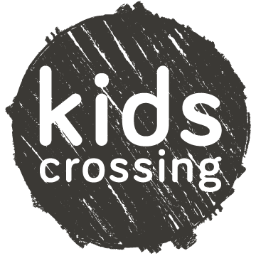
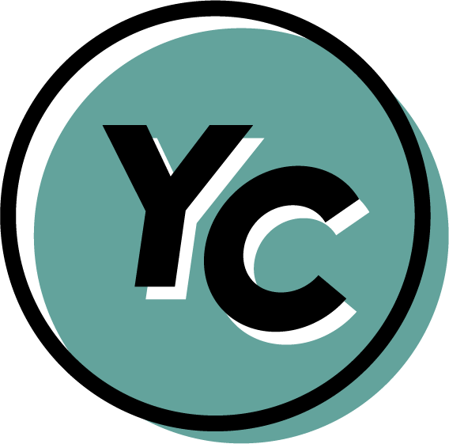
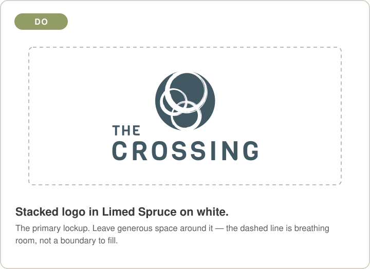
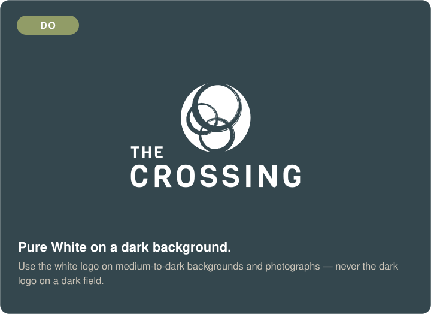
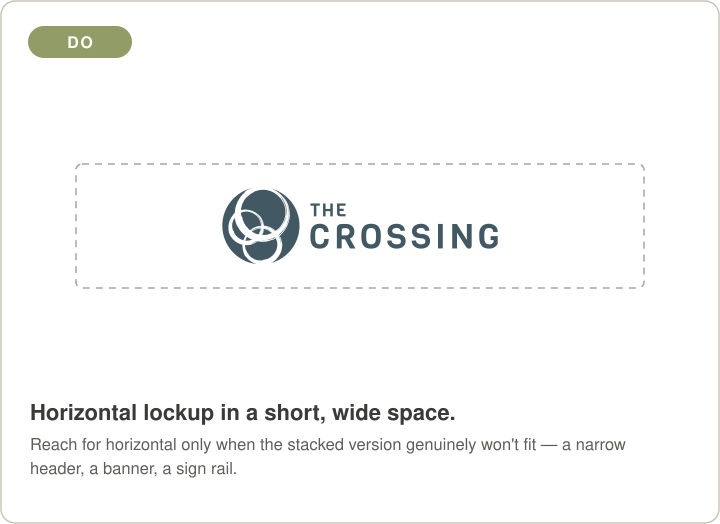
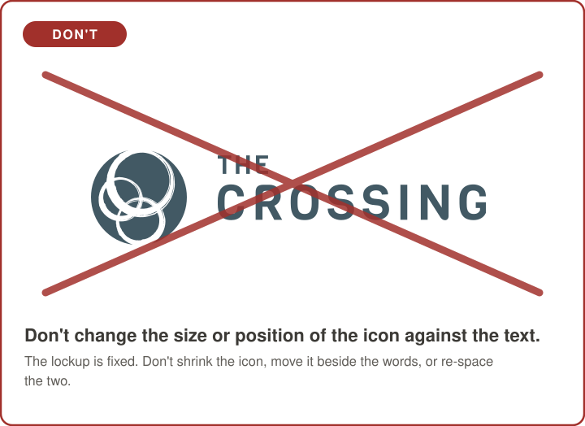
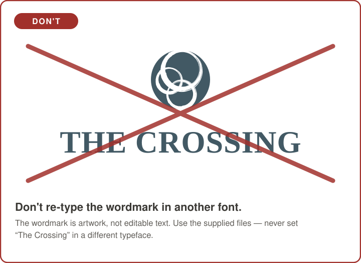
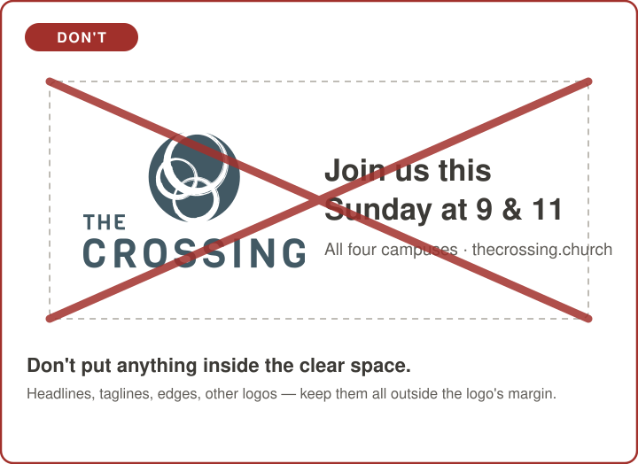
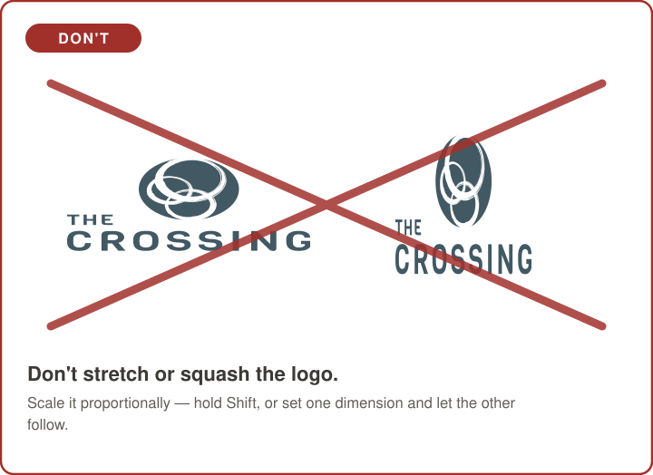
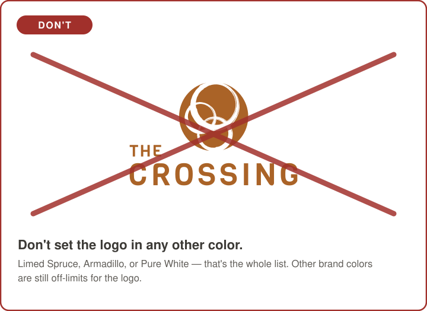

Logo
The stacked Limed Spruce lockup is primary — use it unless it won't fit, then use horizontal. Every Crossing lockup ships in three colorways as SVG and PNG. The ministry marks have their own colorways — see Sub-brands.
Colors
Click any swatch to copy its hex. Values come from the official Brand Guides 2023. CMYK/Pantone equivalents still need to be added for print.
Type
Six typefaces, by role. Bariol is the body font — not the wordmark (the logo is set in Viga).
Sub-brands
KidsCrossing and Youth Crossing each have their own mark and their own colorways. Don't recolor a ministry mark into the core palette, or the core logo into theirs — and note that the three approved Crossing colorways don't apply here. The five logo don'ts do.


Guidelines
Five things never to do to the logo — with worked examples underneath.








Pull the brand into code
Every asset and rule is available as structured data at a stable raw URL — no auth. Point scripts and AI tools here to produce on-brand work.
curl -s https://raw.githubusercontent.com/TheCrossing-Church/brand/main/brand-kit.json \
| jq '.color_system.primary.crossing_blue.hex'
# → "#425964"